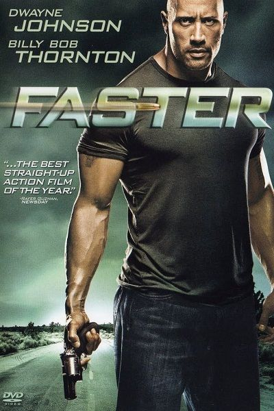

| CBFC: A 2010 ‧ Action/Thriller ‧ 1h 34m |
IMDb 6.4/10
After being released from jail, Driver makes a list of those involved in a botched robbery that resulted in his brother's death. He begins hunting them down but is chased by a detective and a hitman.